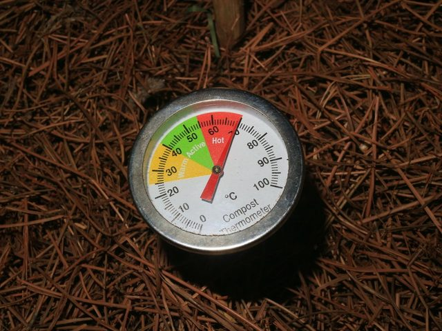

VOCABULARY · 主題 2000 字 PART 2 UNIT 24
Weather & nature．天氣與大自然
天氣、自然現象、氣候和溫度，共 14 個。很多天氣名詞加 -y 就變形容詞：fog → foggy、storm → stormy。
共 14 個單字．點 🔊 聽發音
1foggyadj.
有霧的
fog + g + y
It was so foggy that we couldn't see the road.霧大到我們看不見路。
2freezingadj.
極冷的；冰凍的
freeze 結冰 → freezing
It's freezing outside. Wear your coat.外面冷死了，穿上外套。
3humidadj.
潮濕的
humidity 濕度
Taiwan is hot and humid in summer.台灣夏天又熱又潮濕。
4stormyadj.
暴風雨的
storm + y
The boats stayed in the harbor on the stormy night.暴風雨的晚上船都留在港口。
5fogn.
霧
不可數
The fog will clear up in the afternoon.霧會在下午散去。
6lightningn.
閃電
不可數；先看到閃電才聽到雷
Lightning hit the tall tree.閃電打中那棵高大的樹。
7snowmann.
雪人
複數 snowmen
The kids built a snowman in the yard.孩子們在院子裡堆了雪人。
8stormn.
暴風雨
thunderstorm 雷雨
The storm knocked down many trees.暴風雨吹倒了很多樹。
9thundern.
雷；雷聲
不可數
My dog hides under the bed when it hears thunder.我的狗聽到雷聲就躲到床底下。

10naturaladj.
自然的；天然的
nature → natural
This juice is made from natural fruit.這果汁是用天然水果做的。
11airn.
空氣；天空
不可數；fresh air 新鮮空氣
Let's open the window to get some fresh air.我們打開窗戶透透氣吧。
12climaten.
氣候
長期的；weather 是每天的
Taiwan has a warm climate.台灣氣候溫暖。

13degreen.
度數；學位
30 degrees 三十度
It's 35 degrees today. It's really hot!今天三十五度，真的好熱！
14temperaturen.
溫度；體溫
take one's temperature 量體溫
The nurse took my temperature.護士幫我量體溫。
FOCUS
名詞 → 形容詞
| 名詞 | 形容詞 |
|---|---|
| fog 霧 | foggy 有霧的 |
| storm 暴風雨 | stormy 暴風雨的 |
| nature 自然 | natural 自然的 |
| freeze 結冰（動詞） | freezing 極冷的 |
fog 是短母音加單子音，要重複 g 再加 -y：foggy。
FOCUS
weather 和 climate
| 字 | 意思 |
|---|---|
| weather | 某一天的天氣 |
| climate | 一個地方長期的氣候 |